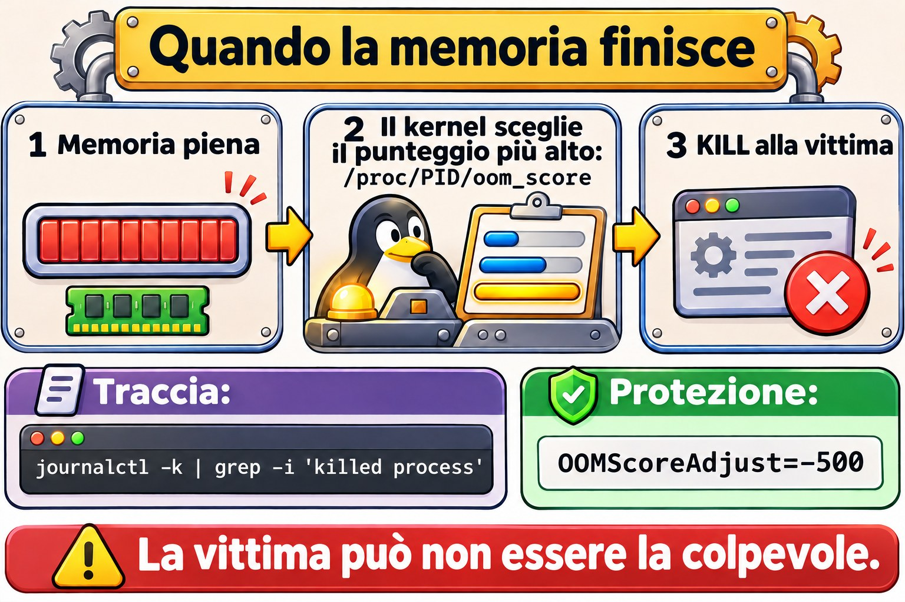
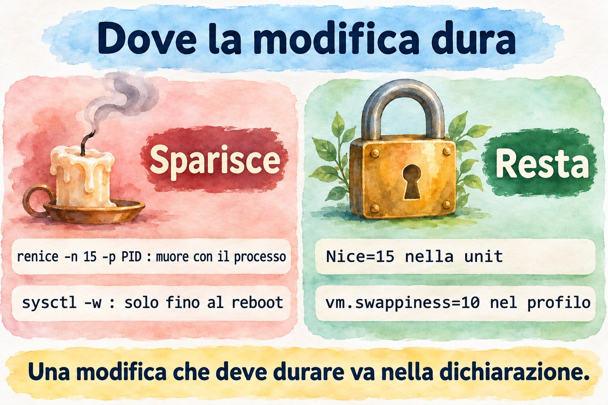

Lezione 7.3 · Priorità e profili
Trovare il processo vorace è metà del lavoro. L'altra metà è decidere cosa farne quando non si può semplicemente terminarlo, perché quel report deve finire e gli utenti devono poter continuare a lavorare. In questa lezione impari a declassare, limitare e regolare l'intero sistema. In fondo c'è la Sfida dell'M7.
Il cuore di questa lezione: leggere carico,
vmstatefreeper capire quale risorsa manca; usareniceerenicesapendo cosa non fanno; contenere un processo conCPUQuotaeMemoryMax; trovare le tracce dell'OOM killer; e applicare e verificare i profili contuned-adm. Il resto è approfondimento.
| Scheda | |
|---|---|
| Modulo | M7 · Processi e prestazioni, lezione 3 di 3, con la Sfida del modulo |
| Quando | Settimana 11. La Sfida può slittare a fine settimana o alla 12 |
| Alla fine | Trovi e contieni il processo che divora CPU o memoria, senza riavviare nulla |
| Prerequisiti | Lezioni 4.2, 7.1 e 7.2 |
| Durata | circa 2h, più 1h per la Sfida |
| Snapshot | m7a3-inicio e m7a3-fim su rocky-lab. Su debian-lab, sola lettura e nice |
1 · Riscaldamento
Rispondi prima di leggere.
- Un processo con nice 19 ha priorità maggiore o minore di uno con nice 0?
- Un server inattivo ha un solo processo con nice 19. Usa poca CPU a causa del nice?
- Nell'output di
free -h, quale colonna dice quanta memoria i programmi possono ancora usare?
2 · Perché conta
| La richiesta | La risposta sbagliata | Cosa provoca |
|---|---|---|
| "Il report rallenta tutti" | Terminare il report | Il lavoro va perso. Bastava declassarlo o limitarlo |
"Ho usato renice e il giorno dopo era tornato come prima" | Mettere renice in cron | Il nice era del vecchio processo. La cosa giusta è Nice= nella unit |
| "Il database è caduto da solo di notte" | Riavviare e dimenticare | È stato l'OOM killer, e succederà di nuovo |
"La VM è lenta e top mostra CPU libera" | Aumentare le vCPU | La colonna st o wa raccontava un'altra storia |
"Ho cambiato lo swappiness ed è tornato da solo" | Cambiarlo di nuovo | Un profilo di tuned o un file in /etc/sysctl.d definisce il valore |
3 · Modello mentale
La CPU è uno sportello di banca con la fila. Il
niceè la cortesia del cliente: più alto è il numero, più volte lascia passare l'altro. Se la fila è vuota, essere cortesi non cambia nulla.CPUQuotaè un'altra cosa: è il regolamento della filiale, che limita il servizio anche con lo sportello libero.MemoryMaxè la dimensione della scrivania: chi supera il limite viene portato via. Etunedè la modalità di funzionamento della filiale, un insieme di regole che attivi in un colpo solo.
Quem falta?
uptime carga maior que nproc? ── sim ── vmstat 2 5
vmstat us alto → CPU, programas → top, tecla P
sy alto → CPU, kernel → muita chamada de sistema
wa alto → esperando disco → estado D, próximos módulos
st alto → o hipervisor não dá CPU → olhar o Proxmox
si/so → trocando com swap → top, tecla M
free available baixo? → quem cresce? RSS
Contenção:
nice / renice só importa quando há disputa
CPUQuota, CPUWeight limita pelo cgroup, por serviço
MemoryMax passou do limite → OOM dentro do cgroup
tuned perfil de ajustes do sistema inteiro
Ponte Windows
| In Windows | In Linux | Dove il paragone inganna |
|---|---|---|
| Impostare la priorità in Gestione attività | renice | La scala è invertita: un numero maggiore significa priorità minore |
start /low programa | nice -n 19 programa | Senza contesa per la CPU, l'effetto è nullo |
| Limite di CPU e memoria su un oggetto Job, o WSRM | CPUQuota=, MemoryMax= | In Linux fa parte di systemd, per unit |
| Piano di risparmio energetico | Profilo di tuned | Il profilo tocca anche memoria, disco e rete |
| Memoria in standby (Standby) | buff/cache | Non è memoria persa: il kernel la restituisce quando serve |
4 · L'essenziale
Leggere la risorsa che manca
| Colonna | Dove | Significa |
|---|---|---|
us e sy | vmstat, top | CPU nei programmi e nel kernel |
wa | vmstat, top | CPU inattiva in attesa di I/O |
st | vmstat, top | Tempo rubato: la VM voleva CPU e l'hypervisor non gliel'ha data |
si e so | vmstat | Pagine lette e scritte nello swap |
available | free | Ciò che i programmi possono ancora usare |
VSZ | ps | Memoria riservata, molto maggiore di quella reale |
RSS | ps | Memoria fisica occupata adesso |
Priorità
| Voglio... | Comando |
|---|---|
| Avviare con meno priorità | nice -n 10 comando |
| Cambiare un processo in esecuzione | renice -n 15 -p PID |
| Cambiare tutti quelli di un utente | sudo renice -n 5 -u nome |
| Vedere il nice | ps -o pid,ni,comm -p PID |
Cambiare in top | Tasto r |
| Priorità permanente su un servizio | Nice=10 nella unit |
La scala va da -20 (più priorità) a 19 (meno), e il predefinito è 0. Un utente normale può solo aumentare il numero. Abbassarlo, anche sul proprio processo, richiede root.
Il limite del nice: confronta solo i processi che si contendono la stessa CPU. Nei kernel con autogroup attivo, vale all'interno della stessa sessione, e tra cgroup la divisione avviene prima per cgroup. Controlla con cat /proc/sys/kernel/sched_autogroup_enabled; il file potrebbe non esistere.
Contenere con i cgroup
| Voglio... | Comando |
|---|---|
| Eseguire un'attività limitata | sudo systemd-run --unit=NOME -p CPUQuota=20% comando |
| Cambiare adesso, senza salvare | sudo systemctl set-property --runtime UNIT CPUQuota=50% |
| Cambiare in modo permanente | sudo systemctl edit UNIT, con [Service] e CPUQuota=50% |
| Limitare la memoria | MemoryMax=1G |
| Vedere il consumo per unit | systemd-cgtop |
100% equivale a un core intero: su un server da 4 core, il tetto possibile è 400%.
L'OOM killer
Quando la memoria manca e non c'è più da dove prenderla, il kernel sceglie un processo e lo elimina. La vittima può non essere la colpevole: è quella con il punteggio più alto, e di solito è chi occupa più memoria in quel momento.
| Voglio... | Comando |
|---|---|
| Trovare le tracce | sudo journalctl -k | grep -iE 'out of memory|killed process' |
| Vedere il punteggio | cat /proc/PID/oom_score |
| Proteggere un servizio | OOMScoreAdjust=-500 nella unit |


tuned
| Voglio... | Comando |
|---|---|
| Elencare i profili | tuned-adm list |
| Vedere il profilo attivo | tuned-adm active |
| Vedere la raccomandazione | tuned-adm recommend |
| Applicare | sudo tuned-adm profile NOME |
| Controllare se è ancora applicato | sudo tuned-adm verify |
| Disattivare le regolazioni | sudo tuned-adm off |
Profili comuni: balanced, throughput-performance, latency-performance, virtual-guest, virtual-host e powersave. Dentro una VM, la raccomandazione di solito è virtual-guest. I tuoi profili stanno in /etc/tuned/NOME/tuned.conf.
Rocky × Debian
| Rocky | Debian | |
|---|---|---|
nice, renice, vmstat, free | Uguali | Uguali |
tuned | Può mancare nell'installazione minima. Se manca, dnf install tuned | Disponibile nel repository, ma non c'è di default |
CPUQuota, MemoryMax | systemd | systemd |
5 · Lab guidato
Passo 0 · Snapshot e cartella. In Proxmox: qm snapshot 201 m7a3-inicio. Su rocky-lab:
mkdir -p ~/lab73 && cd ~/lab73
rpm -q tuned || sudo dnf install -y tunedPasso 1 · Chiedere quale risorsa manca.
uptime
nproc
vmstat 2 3
free -h
top -b -n1 | head -n 5La prima riga di vmstat è una media dal boot. Leggi le successive. Con la VM ferma, id resta vicino a 100.
Passo 2 · Provocare contesa. I due processi vengono legati allo stesso core, per contendersi davvero la CPU.
taskset -c 0 yes > /dev/null &
A=$!
taskset -c 0 nice -n 19 yes > /dev/null &
B=$!
sleep 5
top -b -n2 -d3 -p $A,$B | awk 'NF' | tail -n 2La divisione è vicina al 98% per quello con nice 0 e al 2% per quello con nice 19. Ora pareggia:
renice -n 19 -p $A
sleep 2
top -b -n2 -d3 -p $A,$B | awk 'NF' | tail -n 2
renice -n 0 -p $A
sudo renice -n 0 -p $A
kill $A $BCon entrambi a 19, si divide a metà. renice -n 0 senza sudo fallisce con Permission denied: l'utente normale può solo aumentare il numero.
Passo 3 · Memoria vera.
python3 -c 'x = b"x" * (300 * 1024 * 1024); import time; time.sleep(600)' &
M=$!
sleep 6
ps -o pid,vsz,rss,pmem,comm -p $M
free -h
ps -eo pid,rss,pmem,comm --sort=-rss | head -n 5
kill $M
sleep 1
free -hRSS è poco sopra i 300 MB, e il processo compare al primo posto nell'elenco. Dopo il kill, la colonna available si riprende.
Passo 4 · Tetto di CPU.
sudo systemd-run --unit=lab-gira -p CPUQuota=20% sh -c 'while :; do :; done'
sleep 5
P=$(systemctl show -p MainPID --value lab-gira)
top -b -n2 -d3 -p $P | awk 'NF' | tail -n 1
sudo systemctl set-property --runtime lab-gira CPUQuota=50%
sleep 5
top -b -n2 -d3 -p $P | awk 'NF' | tail -n 1
sudo systemctl stop lab-giraLa CPU resta vicina al 20% e, poi, al 50%, anche con la VM inattiva. È ciò che il nice non fa. Il PID non è cambiato: hai limitato il processo senza interromperlo.
Passo 5 · Tetto di memoria.
sudo systemd-run --wait -p MemoryMax=200M -p MemorySwapMax=0 python3 -c 'x = b"x" * (300 * 1024 * 1024)'
sudo journalctl -k -n 30 --no-pager | grep -iE 'out of memory|killed process'
free -hsystemd-run --wait riporta oom-kill nel risultato. Nel journal compare Memory cgroup out of memory. Il resto del sistema non se n'è nemmeno accorto: il tetto ha limitato il danno a quell'attività.

Passo 6 · Profilo di tuned.
sudo systemctl enable --now tuned
tuned-adm list | head -n 20
tuned-adm active
tuned-adm recommend
sudo tuned-adm profile virtual-guest
tuned-adm active
sudo tuned-adm verify
sysctl vm.swappiness vm.dirty_ratioverify controlla se il sistema è come lo vuole il profilo. In una VM, può rispondere Verification failed anche con tutto a posto: il profilo chiede il boost della CPU, e la VM non espone quella regolazione. Non fermarti alla frase; il motivo di ogni errore è nel log:
sudo grep 'verify: failed' /var/log/tuned/tuned.log | tail -n 5Su rocky-lab, le righe citano 'boost' = 'None', expected '1'. È un limite della VM, non un tuo errore.
Passo 7 · Un tuo profilo.
sudo mkdir -p /etc/tuned/lab-curso
sudo tee /etc/tuned/lab-curso/tuned.conf > /dev/null <<'EOF'
[main]
summary=Perfil do curso: virtual-guest com menos swap
include=virtual-guest
[sysctl]
vm.swappiness=10
EOF
sudo tuned-adm profile lab-curso
tuned-adm active
sysctl vm.swappinessCon include, erediti l'intero profilo e cambi solo ciò che serve. Lo swappiness deve comparire come 10.
Passo 8 · debian-lab. Ripeti il Passo 1 e il Passo 2. Poi controlla se tuned è disponibile con apt-cache policy tuned, senza installare.
Non pulire ancora. Il Guasto 1 usa il profilo lab-curso.
Decidi 1
Un report pesante deve finire oggi, e gli utenti si lamentano della lentezza. Gira come servizio, su un server con 8 core. Cosa fai?
A) Lo termini e chiedi di eseguirlo di notte. B) renice -n 19 sul processo, e controlli l'effetto. Se il problema continua, applichi CPUQuota con set-property --runtime. C) Aumenti lo swappiness.
Scegli un'opzione prima di continuare.
| Se hai scelto | Risultato | Perché |
|---|---|---|
| A | Il lavoro va perso | Si poteva avere entrambe le cose: il report e il sistema reattivo |
| B | Giusto | Prima la regolazione più leggera, poi il tetto. Nulla è stato riavviato, e la modifica non resta salvata |
| C | Nessuna relazione | La memoria non è ciò che manca |
Da ricordare: intervieni sempre prima su ciò che si può annullare senza interrompere.
Decidi 2
Il database è stato ucciso dall'OOM killer. Un servizio di report ha un memory leak noto. Cosa risolve?
A) Mettere OOMScoreAdjust=-1000 sul database e andare avanti. B) Definire MemoryMax= sul servizio di report, e aprire un ticket per correggere il leak. C) Spegnere lo swap.
Scegli un'opzione prima di continuare.
| Se hai scelto | Risultato | Perché |
|---|---|---|
| A | Sposta solo il problema | Il kernel ucciderà un altro servizio, e il leak continua |
| B | Giusto | Il tetto fa pagare il conto al responsabile, e la causa resta registrata |
| C | Peggiora | Toglie il margine e fa arrivare l'OOM più in fretta |
Da ricordare: il colpevole e la vittima di solito sono processi diversi. Cerca chi è cresciuto.
6 · Rompi e ripara


Guasto 1 · La regolazione uscita dal profilo
sudo sysctl -w vm.swappiness=60
sudo tuned-adm verify
sudo grep swappiness /var/log/tuned/tuned.log | tail -n 1Sintomo: verify fallisce e riporta che il sistema differisce dal profilo, e ora il log mostra un nuovo errore, oltre a quello del boost.
Diagnosi: sysctl vm.swappiness mostra 60, e il profilo dice 10. Il log conferma: verify: failed: 'vm.swappiness' = '60', expected '10'.
Riparazione: sudo tuned-adm profile lab-curso e sudo tuned-adm verify. Nella VM, la frase finale continua a essere di errore a causa del boost; ciò che cambia è il log, che passa a dire verify: passed: 'vm.swappiness' = '10'. Se la modifica dovesse valere davvero, dovrebbe entrare nel profilo.
Nella vita reale: un file in /etc/sysctl.d può battere il valore del profilo, perché tuned riapplica per default il sysctl del sistema. Quando un valore non obbedisce, cerca con grep -r swappiness /etc/sysctl.d /usr/lib/sysctl.d /etc/sysctl.conf.
Guasto 2 · Il renice che non è durato
sudo systemd-run --unit=lab-nice -p Restart=always -p RestartSec=1 sleep 7000
sleep 1
P=$(pgrep -f 'sleep 7000')
sudo renice -n 15 -p $P
ps -o pid,ni,comm -p $P
sudo kill $P
sleep 3
ps -o pid,ni,comm -p "$(pgrep -f 'sleep 7000')"Sintomo: il nice è tornato a 0, con un altro PID.
Diagnosi: renice vale per quel processo. Quando il servizio si riavvia, nasce un altro processo.
Riparazione: dichiaralo nel servizio.
sudo systemctl stop lab-nice
sudo systemd-run --unit=lab-nice -p Nice=15 -p Restart=always -p RestartSec=1 sleep 7000
sleep 1
sudo kill "$(pgrep -f 'sleep 7000')"
sleep 3
ps -o pid,ni,comm -p "$(pgrep -f 'sleep 7000')"
sudo systemctl stop lab-niceOra il nuovo processo nasce già con 15. In un servizio installato, usa systemctl edit e Nice=15.
Guasto 3 · Il database è morto di notte (racconto)
Al mattino, il database è fermo. In systemctl status, compare Failed with result 'oom-kill' oppure signal=KILL.
Diagnosi: sudo journalctl -k --since yesterday | grep -iE 'out of memory|killed process'. La riga mostra la vittima, e il dump subito sopra elenca quanto occupava ciascun processo.
Riparazione: riavvia il servizio, scopri chi è cresciuto a quell'ora, limita quel servizio e controlla se la memoria della VM basta per la somma di tutto.
Da ricordare: dopo ogni KILL inatteso, guarda il journal del kernel.
Pulizia
sudo tuned-adm profile virtual-guest
sudo rm /etc/tuned/lab-curso/tuned.conf
sudo rmdir /etc/tuned/lab-curso
sudo systemctl stop lab-gira lab-nice 2>/dev/null
pgrep -a -x yes
pgrep -af 'sleep 7000'
tuned-adm activeI due pgrep non devono mostrare nulla, e il profilo attivo deve essere virtual-guest.
7 · Trappole
| Trappola | Cosa succede | Come evitarla |
|---|---|---|
| Credere che nice maggiore sia più priorità | Fa il contrario | Pensa alla cortesia: più cortese, meno CPU |
| Aspettarsi che il nice limiti la CPU | Senza contesa, il processo usa tutto | Usa CPUQuota |
renice su un servizio | Sparisce al prossimo restart | Nice= nella unit |
Guardare free invece di available | Sembra che manchi memoria | Leggi available |
Confrontare per VSZ | Suggerisce un consumo che non esiste | Usa RSS |
MemoryMax minore dell'uso attuale | Il servizio può essere ucciso subito | Misura prima e definisci con margine |
Usare --runtime e pensare che resti | Sparisce al reboot | Usa systemctl edit per salvare |
Regolare sysctl a mano con tuned attivo | Resta fuori dal profilo, e verify fallisce | Mettilo nel profilo |
Ignorare st in una VM | Cerchi il problema nel posto sbagliato | Guarda l'host in Proxmox |
ionice senza controllare lo scheduler | Può non avere effetto | Guarda /sys/block/DISCO/queue/scheduler |
8 · Quiz
Rispondi senza guardare. Le soluzioni sono alla fine della lezione.
- Qual è l'intervallo del nice, e qual è il predefinito?
- Perché
nice -n 19non impedisce a un processo di occupare il 100% di un server inattivo? - Qual è la differenza tra
set-property --runtimeesystemctl edit? waalto estalto indicano quali problemi?- Come dimostrare che un processo è stato ucciso dall'OOM killer?
- Come ereditare un profilo di
tunede cambiare un solo valore?
9 · Promemoria
Da sapere a memoria:
| Voglio... | Comando |
|---|---|
| Avviare con cortesia | nice -n 10 comando |
| Declassare | renice -n 15 -p PID |
| Tetto temporaneo | sudo systemctl set-property --runtime UNIT CPUQuota=50% |
| Tracce dell'OOM | sudo journalctl -k | grep -iE 'out of memory|killed process' |
| Profilo attivo | tuned-adm active |
| Applicare un profilo | sudo tuned-adm profile NOME |
| Controllare il profilo | sudo tuned-adm verify |
Da consultare:
| Voglio... | Comando |
|---|---|
| Vedere le risorse | vmstat 2 5, free -h, uptime |
| Ordinare per memoria reale | ps -eo pid,rss,pmem,comm --sort=-rss | head |
| Consumo per servizio | systemd-cgtop |
| Attività limitata | sudo systemd-run --unit=N -p CPUQuota=20% -p MemoryMax=1G comando |
| Legare a un core | taskset -c 0 comando |
| Bassa priorità del disco | ionice -c 3 comando |
| Raccomandazione | tuned-adm recommend |
| Log di tuned | /var/log/tuned/tuned.log |
Flashcard:
- Nice 19 → il più cortese; conta solo quando c'è contesa.
CPUQuota→ tetto, anche con la CPU libera.available→ ciò che i programmi possono ancora usare.st→ la VM voleva CPU e l'hypervisor non gliel'ha data.- Vittima dell'OOM → non sempre è la colpevole.
- Restart del servizio → il
renicenon sopravvive; usaNice=.
10 · Checklist e chiusura
- [ ] Dico quale risorsa manca guardando
vmstatefree - [ ] Uso
niceerenicee so quando non hanno effetto - [ ] Metto un tetto di CPU e memoria a un servizio
- [ ] Conosco la differenza tra modifica temporanea e permanente
- [ ] Trovo le tracce dell'OOM killer nel journal
- [ ] Applico, verifico e creo profili di
tuned
Ultimo esercizio, senza guardare la lezione: crea un profilo lab-final che erediti da balanced e usi vm.swappiness=20. Applica, dimostralo con sysctl e verify, e torna a virtual-guest rimuovendo il profilo.
Snapshot di fine (in Proxmox):
qm snapshot 201 m7a3-fim11 · Nella vita reale
Missione, sola lettura. Su un server Linux che amministri (o con autorizzazione), esegui solo:
uptime
nproc
vmstat 2 5
free -h
ps -eo pid,ni,rss,pmem,comm --sort=-rss | head
ps -eo pid,ni,comm | awk '$2 != 0' | head -n 20
tuned-adm active 2>/dev/null
sudo journalctl -k --since "7 days ago" | grep -iE 'out of memory|killed process'Domande a cui rispondere:
- Quale risorsa è più vicina al limite?
- In una VM,
stsupera spesso lo zero? - Qualche servizio gira con un nice diverso da 0? È stato voluto?
- Ci sono stati OOM negli ultimi 7 giorni?
- C'è un profilo di
tunedapplicato? Si adatta al ruolo della macchina?
Diario: annota le risposte 1 e 4. Non modificare nessuna regolazione.
Domani, senza guardare: scrivi cosa rivela ogni colonna (us, sy, wa, st) e il comando per mettere un tetto di CPU a un servizio.
12 · Approfondire quando vuoi
chrt: scheduling in tempo reale. Un errore qui può bloccare il server.CPUWeight=eIOWeight=: divisione proporzionale tra i servizi.MemoryHigh=: frena il servizio prima che raggiungaMemoryMax.systemd-oomd: termina i processi sotto pressione di memoria prima dell'OOM del kernel.perf topepidstat: cosa sta facendo il processo mentre consuma CPU.- Creare profili con
[script],[disk]e[cpu]: vediman tuned.conf.
DeepTutor (http://10.1.0.149:3782, KB "Curso Linux Sysadmin"):
!explica a diferença entre nice e CPUQuota!feynman o que significam wa e st no vmstat!quiz Aula 7.3, 5 perguntas sobre nice, cgroups e tuned
Sfida dell'M7 · Il processo misterioso
La missione: un processo divora CPU e memoria su rocky-lab. Trovalo, declassalo, limitalo e terminalo nel modo giusto, senza riavviare la VM.
Non c'è un passo-passo. I suggerimenti sono nelle Soluzioni, ma prova prima senza.
Prima di iniziare: qm snapshot 201 m7-desafio-inicio. Annota l'output di uptime -s. Poi simula l'incidente con il comando qui sotto, senza cercare di capirlo:
sudo systemd-run --unit=cache-sync -p Restart=always -p RestartSec=2 python3 -c 'x = b"x" * (300 * 1024 * 1024); exec("while True: pass")'Requisiti:
- Scopri il PID, il consumo di CPU e di memoria, e il nome della unit responsabile.
- Declassa il processo a nice 19 e dimostralo.
- Metti un tetto del 25% di CPU, senza riavviare il servizio, e dimostralo con
top. - Mostra che terminare tramite il PID non risolve.
- Terminalo nel modo giusto.
- Scrivi
~/labm7/relatorio.txtcon ciò che hai trovato, ciò che hai fatto e come l'hai dimostrato.
Criteri di accettazione:
systemctl status cache-sync --no-pager
pgrep -af 'while True'
uptime -s
free -h
cat ~/labm7/relatorio.txt- [ ] Il report contiene PID, unit, CPU e memoria osservati
- [ ] Il report mostra NI = 19 e la CPU vicina al 25%
- [ ] Il report registra che il processo è tornato dopo il
kill - [ ] La unit
cache-syncnon esiste più epgrepnon mostra nulla - [ ]
uptime -sè uguale a quello annotato all'inizio
Bonus (facoltativo): esegui di nuovo il comando, ma con -p MemoryMax=200M -p MemorySwapMax=0 e senza Restart=always. Mostra nel journal del kernel chi lo ha ucciso e spiega perché il sistema è rimasto in piedi.
Alla fine: qm snapshot 201 m7-desafio-fim.
Hai chiuso l'M7. Ora leggi i processi senza farti ingannare, scegli il segnale, proteggi le attività lunghe e contieni chi abusa. Il prossimo modulo inizia nella Lezione 8.1.
Soluzioni commentate
Riscaldamento
- Minore. Più alto è il numero, più il processo è cortese.
- No. Senza contesa, il nice non cambia nulla, e il processo usa tutta la CPU disponibile.
- La colonna
available.
Quiz
- Da -20 a 19, con predefinito 0.
- Perché il nice decide chi passa davanti solo quando c'è contesa. Senza concorrenza, tutto il tempo libero resta a lui.
--runtimevale fino al prossimo reboot e non scrive su disco.systemctl editcrea un drop-in permanente.waalto indica CPU in attesa di I/O, di solito il disco.stalto indica che l'hypervisor non sta dando CPU alla VM.- Con
sudo journalctl -k, cercandoOut of memoryoKilled process. Su un servizio, anchesystemctl statusmostraoom-kill. - Creando
/etc/tuned/NOME/tuned.conf, coninclude=PERFILin[main]e la modifica in[sysctl].
Suggerimenti per la Sfida
Leggine una alla volta, solo quando sei bloccato.
- Trovare:
top, tastiPeM. Oppureps -eo pid,ni,pcpu,rss,comm --sort=-rss | head. - Origine:
systemctl status PIDrisponde con il nome della unit. - Declassare:
sudo renice -n 19 -p PIDeps -o pid,ni,comm -p PID. - Tetto:
sudo systemctl set-property --runtime cache-sync CPUQuota=25%e due campioni contop -b -n2 -d3 -p PID | awk 'NF' | tail -n 1. - Dimostrare il ritorno:
sudo kill PID, aspetta qualche secondo ed eseguisystemctl show -p MainPID --value cache-sync. Il PID è cambiato. - Terminare:
sudo systemctl stop cache-sync. Una unit temporanea sparisce dopo essere stata fermata.